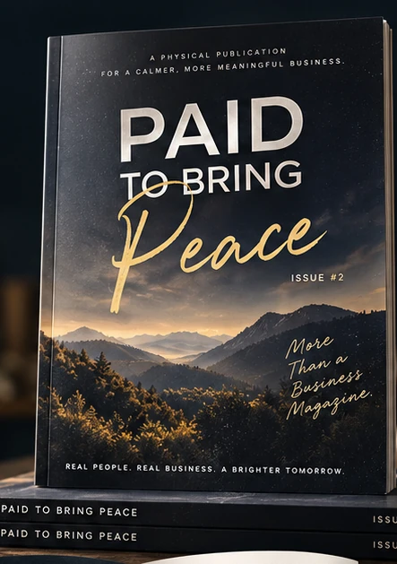
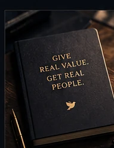
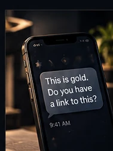
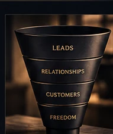
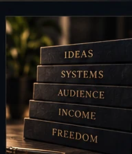
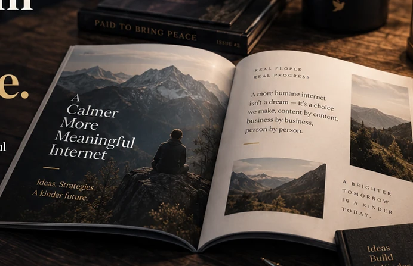
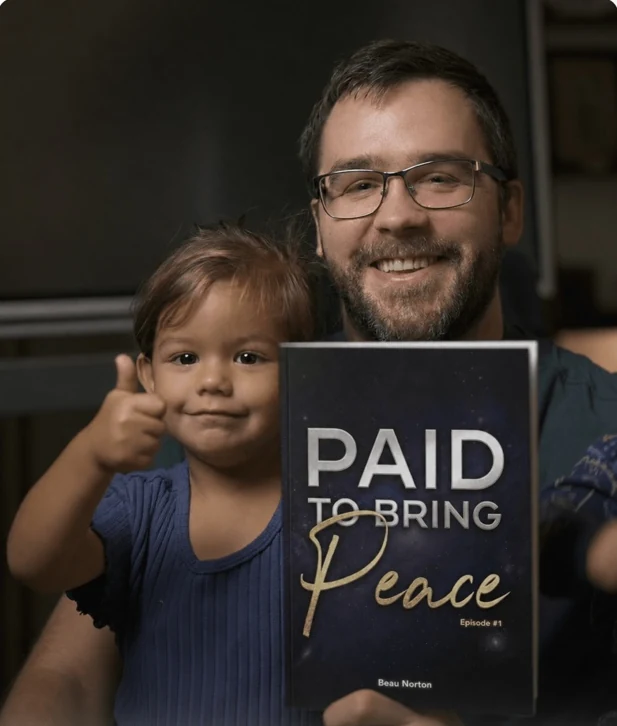
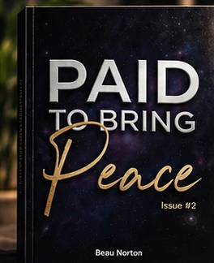

THE CASE STUDY
2,000 leads in one week. Here's what changed.
- The shift that made people start asking for the resource.
- What surprised me about the response.
- The lessons that matter beyond the numbers.
A different way to think about lead generation, creating demand, and building a business that means something.
Thoughtfully written essays, real-world lessons, and practical frameworks for creators who want to grow without becoming a content machine.

WHY THIS ISSUE EXISTS
Over the course of one week, my free AI blueprints helped bring approximately 2,000 people onto my email list. But the most interesting lesson wasn't the number.
It was what happened when I stopped treating my lead magnet like a separate promotion and started making it the centerpiece of the content itself.
Issue 02 is a deeper exploration of that idea: build things people genuinely want, make their value visible, and create something that keeps working after you hit publish.
Explore the six essaysWhat if your next breakthrough didn't come from producing more content, but from creating something worth finding?
— A question behind Issue 02A PERSONAL INTRODUCTION
A dedicated space for the short introduction video, featuring the physical publication and the thinking behind this issue.
The current still is from the existing sales page. Replace it with your final video embed when ready.
THE EDITORIAL COLLECTION / 02
Six connected essays. One larger idea: attract the right people by creating value they can see, experience, and remember.
THE CASE STUDY
THE BIG IDEA
THE PLAYBOOK

THE CONTENT

THE BUSINESS

THE LONG GAME

Part business strategy. Part perspective shift.
Entirely about making the work matter.
Better ideas today.
A more meaningful tomorrow.
PAID TO BRING PEACE · A DIFFERENT KIND OF BUSINESS PUBLICATION
BUILT FOR REAL READING
Not another PDF lost in a downloads folder. Something physical. Something you can underline, revisit, leave on your desk, and return to when you need a different perspective.
Thoughtful long-form writing, not disposable content.
Editorial photography, generous spacing, and tactile design.
Practical frameworks alongside the deeper questions.

DESIGN EXPLORATION · SAMPLE INTERIORA few details from the publication's visual world. Click through the image previews.
Issue 01 photograph and conceptual imagery are shown as design references. Final Issue 02 pages are still in development.

THE PERSON BEHIND THE PAGESA NOTE FROM THE EDITOR
After more than a decade as an online creator and educator, I wanted a place to share more than tactics or quick tips.
Paid to Bring Peace is where business strategy meets original thinking, personal experience, and a more intentional definition of success.
The writing is mine. The perspective is personal. And the goal is simple: to help you build something useful, meaningful, and worth the effort.
Original articles are written by me, with occasional human contributors. AI may help organize ideas; it does not write the finished essays.
Beau Beau Norton · Founder & editor
MORE THAN A TRANSACTION
The original publication has also brought thoughtful people together through private audio notes and conversations about business, creativity, and the inner work of entrepreneurship.
Existing community feedback below relates to prior private audio content, not reviews of this upcoming issue.
These audios are such 🔥
COMMUNITY RESPONSE TO AUDIO NOTESThis was super helpful, Beau. I needed to hear this. Thank you.
COMMUNITY RESPONSE TO AUDIO NOTESPure gold, thank you.
COMMUNITY RESPONSE TO AUDIO NOTESTHE NEXT EDITION
For those who care about the work they create, the people they serve, and the kind of life they're building along the way.

One thoughtfully made issue, shipped as a physical publication.
Demo only. Payment is not active. Final shipping dates, coverage, and any bonuses must be confirmed before launch.
GOOD TO KNOW
These are proposed answers for the preview. Final policies and dates should be checked before the page accepts orders.
This design is for a physical print issue of Paid to Bring Peace. Digital access, if offered, would be stated separately.
No. The original essays are written by Beau Norton and, where included, human contributors. AI may assist with brainstorming or organizing, not writing the finished pieces.
No. The proposed offer on this page is a single issue for a one-time price, with no recurring charge.
The production and shipping date has not been confirmed for this preview. The live sales page should provide a realistic shipment window before checkout is enabled.
Any bonus benefits must be confirmed in the final offer. They are intentionally excluded from this draft's purchase inclusions until their terms and delivery are finalized.
PAID TO BRING PEACE · ISSUE 02
One thoughtfully made publication for the people building more meaningful businesses.
Explore Issue 02